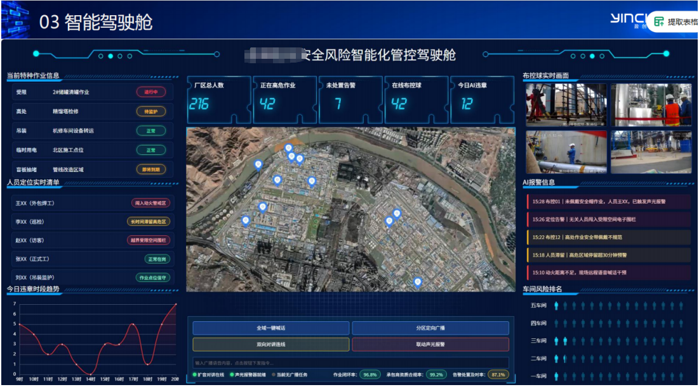
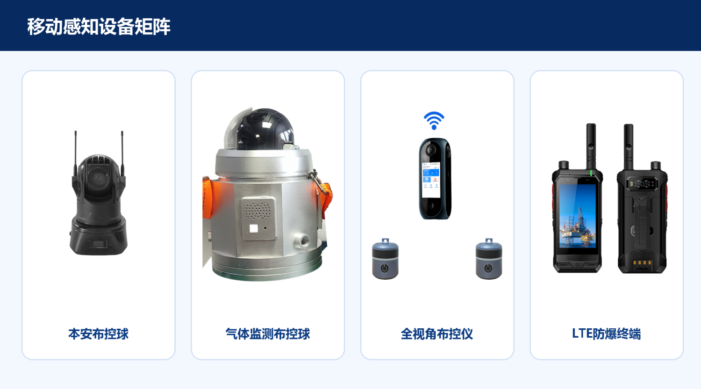
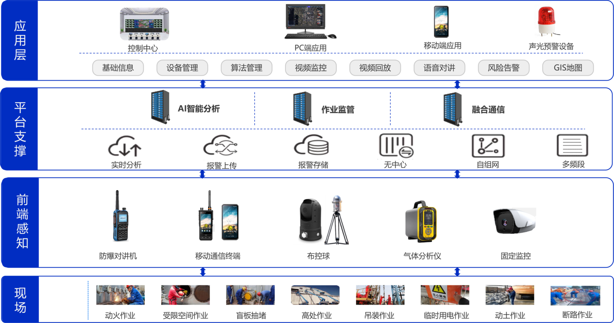

「見える」から「伝わり、動ける」へ。特殊作業監視と統合通信で秒単位の連携を実現公開時間: 2026-08-19 15:16 核心判断 本当に効果的な連携とは、1 つを組み合わせることではありません“通話ボタン”リスク イベントは、監督ページに入力されるのではなく、自動的にコミュニケーション タスクに変換され、配信、対応、廃棄、アーカイブのプロセス全体が閉じられます。 特殊な現場では、このシステムが“参照してください”リスクは最初のステップにすぎません。処理の効率を決めるのは、数秒以内に適切な担当者を見つけ、正しい方法で指示を出し、相手がそれを受け取り、実行していることを確認できるかどうかです。 閉鎖空間、火災、高所、吊り上げなどの特殊な作業には、人員の流れ、環境の変化、複雑な通信条件などの問題が伴うことがよくあります。多くのプラットフォームがジョブチケット、人材配置、ビデオ、およびAI警報は発せられますが、その後の対応は依然として勤務中の担当者が手動で確認、ダイヤル、報告する必要があります。 監視システムと統合通信の間の連携により、リスク イベントが単一通話、グループ通話、ブロードキャスト、会議、モバイル メッセージを自動的に駆動できるようになり、通信の受信によりイベント ステータスを逆に更新できるようになり、“発見する—届く—確認する—処分する—レビュー—アーカイブ”閉じたループ。 1. リンケージの本質：リスクをコミュニケーションタスクに変えるリンケージとは何かを追加することではありません“通話ボタン”ですが、リスクをコミュニケーションタスクに変換します。規制システムは、何が起こったのか、どこで、誰が関与したのか、そしてリスクがどの程度高いのかを説明します。統合コミュニケーションにより、誰に通知されるか、どのチャネルが使用されるか、エスカレーションがいつ発生するか、およびエスカレーションが受信されるかどうかが決まります。 イベントが発生すると、ルール エンジンは作戦の種類、リスク レベル、エリアと任務の関係に基づいてポリシーを照合し、作戦チケットから責任者、保護者、現地職員、緊急部隊を解析します。 Communications Orchestrator は、インターコム、無線、電話、SMS、またはAPPプッシュ、受信確認、プレゼンス、および実行の受信。 指定された時間内に確認がない場合、プラットフォームは自動的に再度電話をかけたり、チャネルを切り替えたり、段階的にアップグレードしたりします。処理が完了すると、通信フロー、応答時間、レビュー結果、および音声とビデオの証拠がインシデント ファイルに書き込まれます。 重要な原則 チャネル通話が成功しても、ビジネスが成功するわけではありません。端末の呼び出し音、担当者の応答、指示の確認、現場での対応、現場でのレビューを個別に記録し、タイムアウトアップグレード条件を設定する必要があります。  図 1 特別な操作監視と統合通信連携コックピット指示 2種類と4種類の高価値連携シナリオ 図 2 さまざまな特殊な動作シナリオ向けのモバイル センシング デバイス マトリックス シナリオ 1: ジョブの開始時にタスク通信グループが自動的に確立されるジョブチケットの開始後、プラットフォームはジョブ番号に基づいて一時的なコミュニケーショングループを作成し、担当者、保護者、オペレーター、現地スタッフを連携範囲に組み込みます。メンバーは担当者の変更に応じて自動的に更新され、手動でのグループ作成に時間がかかることや権限が長期間保持されることを避けるために、ジョブの完了後に解散されます。 シーン 2:AI交通違反を発見した場合、直ちに現場に警報が鳴ります。AI防護具の欠落、保護者の不在、花火の異常などを認識した場合、コックピットが自動的に位置を特定し、リアルタイム画像をポップアップ表示します。同時に、指向性音声を再生したり、聴覚および視覚的なアラームを鳴らしたり、保護者や担当者へのインターホンを開始したりします。繰り返されるアラームは自動的にマージされ、タイムアウト後に確認されない場合はアップグレードされます。 シナリオ3：密閉空間異常、放送開始と避難確認ガス監視、人員の位置決め、または手動ボタンによって異常が発生すると、プラットフォームは電子フェンスに基づいてエリアを特定し、社内の人員に避難を放送し、保護者に強く注意を喚起し、救助隊のセッションを確立します。音声連絡、要員の確認、ポジショニングの見直しが完了して初めて、有効なクローズドループとみなされます。 シナリオ 4: インシデントのエスカレーション、ビデオと音声の同期とコラボレーション複雑な吊り上げ、火災状況の変化、メンテナンスの異常などが発生した場合、現場は防爆端末を介して指令センターと通信し、コックピットはビデオ、作業チケット、人員の位置を同時に取得します。リスクが増大すると、システムは通信範囲を拡大し、会議を開始し、計画担当者に電話をかけ、ゾーンブロードキャストを発行します。 3. 技術的なアーキテクチャ: イベント、戦略、コミュニケーション、受領書イベント バスと通信オーケストレーション層は、監視システムと通信機器の間に設定されます。監視ドメインは統合イベントを出力し、通信ドメインは標準機能を提供し、オーケストレーション層はポリシー、ターゲット、チャネル、および受信を担当します。全体は次の 4 つの層に分けることができます。  図 3 特殊作業の監視と統合通信の全体的な技術アーキテクチャ ● 認識層とビジネス層: ジョブ チケットへのアクセス、人員の配置、ガス検知、ビデオ、AI分析、電子柵、手動警報。 ● イベントおよびルール層: 統合されたリスク分類、ステート マシン、アラームのマージ、ターゲットの解決およびタイムアウトのアップグレード。 ● 統合通信層: 抽象的な単一通話、グループ通話、ブロードキャスト、会議、APPメッセージと音と光を制御し、既存のネットワーク通信プロトコルに適応します。 ● ターミナルおよび監査レイヤー: ディスパッチ ステーション、防爆ターミナル、ボール制御および放送機器、降水量の受け取り、記録および廃棄時間をカバーします。 統合イベントモデルには 2 つのシステムがあります“共通言語”。イベントには少なくとも、一意の識別子、ジョブ チケット、リスク レベル、場所、ターゲットの役割、証拠のアドレス、通信ポリシー、確認期限が含まれます。インターフェイスには、イベント バス、メッセージ キュー、またはRESTコールバック。 脆弱なネットワーク環境では、ハイリスク戦略はマルチチャネル冗長性をサポートする必要があります。つまり、インターコム障害後の電話またはテキスト メッセージの切り替え、オンライン ブロードキャストが利用できない場合の音響および照明機器の起動などです。エッジ側でローカル ルールと短期キャッシュを保持します。同時に、最小限の権限、インターフェイス認証、送信暗号化、および全プロセス監査が実装されます。 4. 導入パス: 単一シナリオの閉ループから大規模運用まで構築は、最初からすべてのオペレーションとすべてのターミナルをカバーする必要はありません。より実現可能な方法は、最初に明確なリスク、明確な責任の連鎖、安定した目標を持つシナリオを選択し、つながりを深め、それから徐々に拡大することです。 1. 最初の段階: 高周波を選択しますAIアラームまたは制限されたスペースの異常、オープンイベント、ターゲット、通信、受信およびアーカイブ。 2. 第 2 段階: 動的ジョブ グループ、タイムアウト アップグレード、マルチチャネル フォールト トレランス、脆弱なネットワーク劣化を改善し、再利用可能なポリシー テンプレートを蓄積します。 3. 第3段階：動作種類、設置エリア、通信端末を拡大し、表示板や連続動作機構を確立する。 有効性評価では、端末の数をカウントするだけでなく、アラーム接触率、最初の応答時間、閉ループ時間、自動アップグレード率、チャネル切り替え成功率、および証拠完全性率に焦点を当てて、コミュニケーションが本当に現場のアクションに変換されているかどうかを判断する必要があります。 特殊な運用監視は、認識可能、局所化可能、判断可能なリスクを解決し、統合コミュニケーションは、到達可能、協力的、確認可能な指示を解決します。両者を連携させると、コックピットはリスクを表示する画面から現場のオペレーションを推進するコマンドポータルへと変化し、“見える、呼べる、対処できる、見つかる”。
東盈創世 株式会社｜モバイル運用インテリジェント監視製品ライン 現場を見える化し、リスクを理解し、指示を伝達し、経営を見直し可能にする。 |